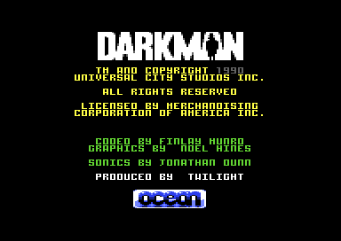
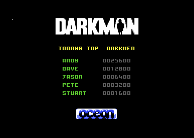
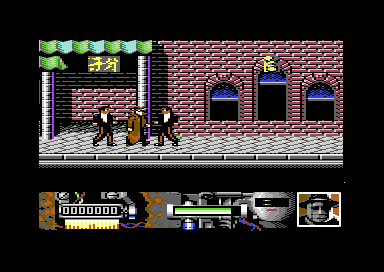
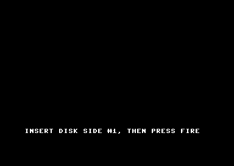
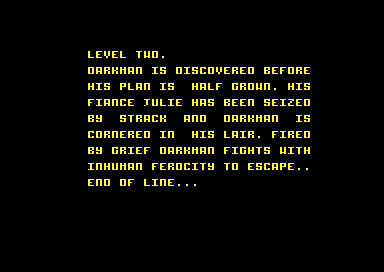
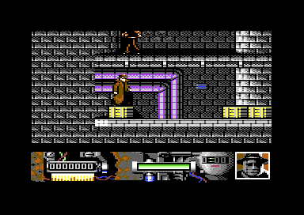

<meta charset="utf-8">
<meta name="viewport" content="width=device-width, initial-scale=1">
<title>Darkman</title>
<link rel="preconnect" href="https://fonts.googleapis.com">
<link rel="stylesheet" href="https://fonts.googleapis.com/css2?family=Lato:wght@400;700;900&family=IBM+Plex+Mono:wght@400;500&display=swap">
<style>
:root{
  --bg:#23262d; --paper:#e9e7e1; --surface:#ffffff; --surface-2:#f1efea; --line:#d5d3cc; --line-soft:#e0ded8;
  --ink:#2f3136; --ink-soft:#55585f; --ink-mute:#80838a;
  --link:#1f5fa8; --link-hover:#154480; --accent:#1f5fa8;
  --amber:#c25a00; --cyan:#1f5fa8; --coral:#d04a3a; --green:#2a8a4a; --violet:#4a5bd6; --hl:#fff0c2;
  --chip:#2f3136; --chip-ink:#ffffff;
  --c64blue:#40318d; --c64grey:#686868;
  --fd:'Lato',system-ui,sans-serif; --fb:'Lato',system-ui,sans-serif; --fm:'IBM Plex Mono',ui-monospace,Menlo,monospace;
  --col:1080px; --gx:68px; --fs:17px; --lh:1.6; --hw:900; --h1:46px; --h2:26px; --sy:48px; --pp:26px; --r:10px;
  --plate-shadow:0 1px 2px rgba(0,0,0,.05),0 4px 14px rgba(0,0,0,.05);
}
*{box-sizing:border-box}
html{background:var(--bg);min-height:100%}
body{background:var(--paper);color:var(--ink);font-family:var(--fb);font-size:var(--fs);line-height:var(--lh);max-width:var(--col);margin:0 auto;min-height:100vh;padding:0 0 4rem}
h1,h2,h3{font-weight:var(--hw);letter-spacing:-.01em;text-wrap:balance;color:var(--ink);margin:0}
.wrap{padding:0 var(--gx)}
.hero{padding:48px var(--gx) 8px;text-align:left}
.eyebrow{font-family:var(--fm);font-size:12px;letter-spacing:.08em;text-transform:uppercase;color:var(--ink-mute);margin:0 0 10px}
.hero h1{font-size:var(--h1);line-height:1.15;letter-spacing:-.02em;margin:0 0 14px}
.hero .sub{margin:0 0 .6em;color:var(--ink-soft)}
section{padding:var(--sy) 0 24px}
section:last-of-type{border-bottom:none}
.fig{font-family:var(--fm);font-size:12px;letter-spacing:.08em;text-transform:uppercase;color:var(--ink-mute);margin:0 0 10px}
h2.t{font-size:var(--h2);margin-bottom:12px}
.lede{color:var(--ink-soft);margin:0 0 30px}
.plate{background:var(--surface);border:1px solid var(--line);border-radius:var(--r);padding:var(--pp);box-shadow:var(--plate-shadow)}
.cap{font-size:14px;color:var(--ink-mute);margin-top:14px;line-height:1.55}
.cap b{color:var(--ink);font-weight:700}
code{font-family:var(--fm);font-size:.82em;background:var(--chip);color:var(--chip-ink);border-radius:4px;padding:2px 6px;white-space:nowrap}

</style>
<!-- tabs -->
<header class="hero"><p class="eyebrow">Commodore 64 · 1990 · Ocean</p><h1>Darkman</h1><p class="sub">Ocean's game of the Sam Raimi film, written by Twilight. Each of its six levels is a program of its own, loaded from disk after a screen that asks for fire.</p></header>
<main class="wrap">
<section><p class="fig">01 · Overview</p><h2 class="t">Credits, then the streets</h2><p>Once the first level has loaded, the title alternates between two pages: the credits, which name Finlay Munro for the code, Noel Hines for the graphics, and Jonathan Dunn for the sound, and a table of the day's top scores. Fire on the joystick in port 2 starts play.</p><div class="plate"><p class="cap">The credits page of the title screen.</p></div><div class="plate"><p class="cap">The other page of the title: TODAYS TOP DARKMEN.</p></div><p>The first level is a street scene with a brick wall and shop signs, where Darkman fights gangsters in suits. A panel under the play area holds the score, a green bar, and a portrait of Darkman.</p><div class="plate"><p class="cap">Level 1, a few seconds into play.</p></div></section>
<section data-part="resident"><p class="fig">02 · Loading</p><h2 class="t">Six levels, one at a time</h2><p>A small loader stays in memory at $0400 for the whole game. Before each level, the routine at <code>$0625</code> puts up a plain text screen and waits for fire. Before level 1 and level 4, the screen says which side of the disk to insert, and before the other levels it reads PRESS FIRE TO LOAD NEXT LEVEL.</p><div class="plate"><p class="cap">The prompt before the first load.</p></div><p>The loop at <code>$0407</code> then loads the two files of the level whose number is held at <code>$0435</code>, retries after a disk error, adds one to the number, and jumps to <span data-part="level1"><code>$0A20</code></span>. Each level's first file starts at that address, and its second fills $BF00 onwards, under the chips and the ROMs. Coloured stripes run across the screen while a load is under way.</p></section>
<section data-part="level1"><p class="fig">03 · Controls</p><h2 class="t">Walk, jump, crouch, and strike</h2><p>The joystick in port 2 does everything. Left and right walk, four pixels every four frames. Up jumps, and Darkman rises 26 lines in 32 frames. Down crouches, and fire with down throws a low strike that carries him forward.</p><p>The interrupt at <code>$1D43</code> copies the joystick to <code>$203B</code> once a frame. A key on the keyboard pauses the game: when the code read at <code>$0E30</code> is <code>$50</code>, the routine at <code>$1777</code> sets a flag, and the interrupts skip every moving part until the key is pressed again.</p></section>
<section data-part="level1"><p class="fig">04 · The play screen</p><h2 class="t">A game run by its interrupts</h2><p>The play screen is drawn by four raster interrupts that hand over to one another, each writing the address of the next into the processor's interrupt vector. They also run the game. The first, at <code>$1E21</code>, moves Darkman and the two enemies and places their sprites: three for Darkman and two for each enemy. The second, at <code>$1EF4</code>, plays the sound and reads the keyboard. The third, at <code>$1D43</code>, reads the joystick and switches the screen matrix, the character set, and the colour mode for the status panel. The fourth, at <code>$1DBF</code>, hands back to the first.</p><p>Meanwhile the main loop at <code>$179E</code> only redraws the panel and waits. When play ends, it goes either to the game-over code at <code>$195C</code> or, when the level is done, to <code>$4A8F</code>.</p></section>
<section data-part="resident"><p class="fig">05 · Between levels</p><h2 class="t">A sound driver that outlives its level</h2><p>Each level's files replace most of memory, but the sound driver is never loaded at all. Level 1 copies it from its own file to <code>$B0C8</code>, in a stretch of memory that no later load writes. Level 2 carries no driver of its own and calls the one level 1 left behind.</p><div class="plate"><p class="cap">The briefing before level 2.</p></div><div class="plate"><p class="cap">Level 2 in play.</p></div></section>
<section><p class="fig">06 · Scope</p><h2 class="t">Two parts of seven</h2><p>The Source tab shows the resident loader and the first level as they stand in play. Level 2 has been reached and saved but not read, and levels 3 to 6 have not been reached.</p></section>
</main>
<footer style="margin:16px 0 0;padding:22px var(--gx) 0;border-top:1px solid #e0ded8;font-family:'IBM Plex Mono',ui-monospace,Menlo,monospace;font-size:12px;color:#80838a"><a href="https://github.com/gamesexplained/gamesexplained" style="color:#1f5fa8;text-decoration:none">GitHub</a> · <a href="https://discord.gg/3V9GWyRDWV" style="color:#1f5fa8;text-decoration:none">Discord</a><br>© Games Explained contributors. Write-ups, facts and symbol maps are available under <a href="https://creativecommons.org/licenses/by-sa/4.0/" style="color:#1f5fa8;text-decoration:none">CC BY-SA 4.0</a>; code under <a href="https://opensource.org/licenses/MIT" style="color:#1f5fa8;text-decoration:none">MIT</a></footer>
